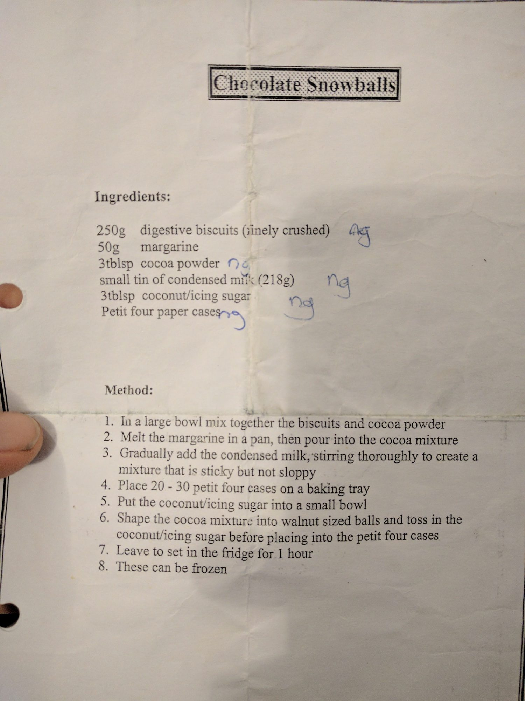

Chocolate Snowballs

Before you start needs 1 hour setting in the fridge.
Ingredients
Method
- In a large bowl, mix together the 500g crushed digestive biscuits and 6 tbsp cocoa powder.
- Melt the 100g butter in a pan, then pour into the cocoa mixture.
- Gradually add the 400g condensed milk, whilst stirring, to get a sticky but not sloppy consistency.
- Roll the mixture into small balls, dip them in the 6 tbsp icing sugar and place each into a petit four case.
- Leave to set in the fridge for 1 hour.